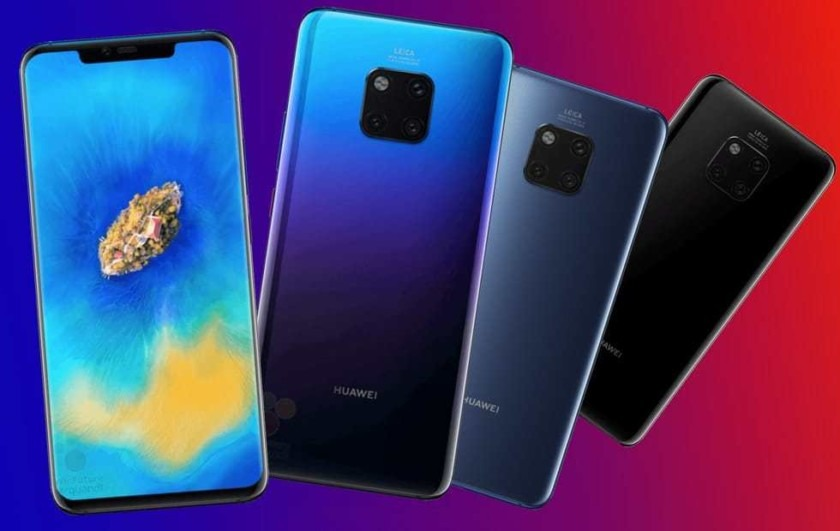
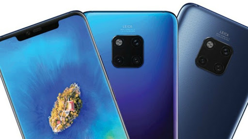
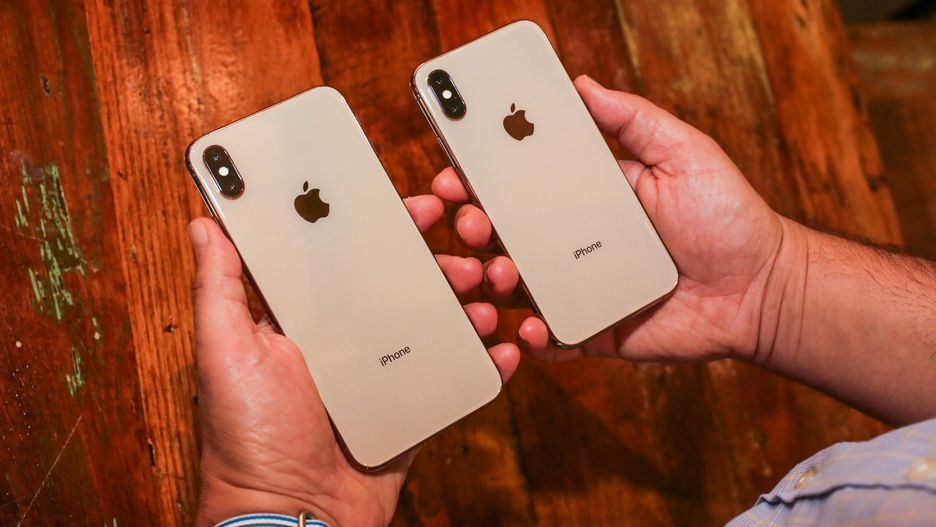

Huawei Mate 20 Tem praticamente o dobro de desempenho do P20 Pro
Sabemos que o Huawei Mate 20 é um smartphone muito estimado, com seu novo chipset o Kirin 980 ele já nos impressiona.
O Huawei Mate 20 tem supostamente o código de modelo LYA-L29, e ele já foi testado no Geekbench e nos mostrou números surpreendentes.

Huawei Mate 20
O futuro nas suas mãos.
O novo chipset da Huawei, o Kirin 980 além de mais rápido é muito mais eficiente, o CEO da empresa, Richard Yu nos apresentou como o SoC, que irá evoluir as capacidades de IA “inteligência artificial” dos smartphones.
Fora isso, o Kirin 980 é uma melhor combinação de desempenho, eficiência, conectividade e poder de processamento.
Huawei Mate 20
O futuro nas suas mãos.
O Huawei P20 Pro obteve 1.900 e 6.700 pontos em testes de um e varios núcleos no Geekbech, já o Huawei LYA-L29 surgiu no Geekbench com a pontuação de 3.390 como resultado de teste single-core e 10.318 pontos em testes multi-core.
Apesar disso, ainda não se sabe se o smartphone em questão é o Huawei Mate 20 ou o Mate 20 Pro, o que sabemos até o momento é que ele virá com 6GB de RAM com o sistema Android 9 Pie.

Huawei Mate 20
O futuro nas suas mãos.
Convenhamos que seja qual for o modelo de smartphone, o resultado é plausível é muito acima da média.
Ambos os smartphones, o Huawei Mate 20 e o Mate 20 Pro, será oficializados já no dia 16 desse mês de Outubro, e acredita-se que tenham uma configuração de câmera traseira tripla.
Configurações estas que certamente vão ultrapassar a qualidade do Huawei P20 Pro, o que sabemos que não é fácil !
Além disso, o Huawei Mate 20 Pro pode integrar um display OLED, com possíveis variantes de 8GB de RAM e 512GB de capacidade de armazenamento.
Apple iPhone Xs e Xs Max Tem selfies criticadas
Parece mesmo que os novos iPhones da Apple tem sido alvo de críticas, após os problemas e bugs relacionados à conectividade, ( Apple iPhone Xs Apresenta falhas de conectividade ) e à bateria ( Apple iPhone Xs apresenta mais problemas ).
Agora as selfies do top de linha da empresa não agrada os usuários, isso está acontecendo devido à suavização da pele, algo que na linha Xs parece ser extrema.
Iphone
E para piorar ainda mais, a suavização extrema de pele presente na câmera frontal dos iPhones Xs não pode ser desativada, o problema é conhecido como “BeautyGate”.
Sabemos que o conhecido “Modo Beauty” sempre esteve presente nos smartphones Android, mais precisamente nos de classe média, algo que ao meu ver compensava a má qualidade de imagem.
Iphone
Porém, muitos desses smartphones tem a opção de desativar esse modo beauty, apenas os smartphones de classe baixa geralmente não oferecem essa opção.
E também, a grande maioria das câmeras frontais de selfies de smartphones Android, mesmo com o modo beauty desativado, dão uma grande suavizada na pele comparado com as câmeras frontais dos iPhones. As câmeras frontais dos iPhones antigos até o modelo X de 2017 pareciam ter a realidade aumentada, realçando ainda mais os detalhes e consequentemente os defeitos praticamente imperceptíveis da pele. Agora com essa ausência da realidade de fato, e com a Apple ter aderido à esse ” modo beauty “, está cada vez mais difícil ver uma câmera de selfie que retrate a verdade.
Apesar de muita gente gostar, para piorar, a Apple acabou exagerando e ajudando a perpetuar os standards de beleza irrealistas, em outras palavras, as pessoas estão parecendo bonecos de cera.
Essa realidade aumentada não era um defeito, mas sim um diferencial do mais do mesmo do mercado de smartphones.

Iphone
Apesar de a câmera dos iPhones Xs e Xs Max serem idênticas às do iPhone X, os usuários notaram um grande aumento na claridade, aumento esse que acabou eliminando sombras e suavizando a pele.
Um YouTuber de renome, conhecido como Lewis Hilsenteger, expôs detalhadamente essa diferença da câmera frontal dos iPhones no seu canal “Unbox Therapy”, percebam a diferença nas fotos abaixo:
Iphone
Iphone
Iphone
A questão é sobre o modo embelezamento se tratar de Hardware ou Software da Apple, aliás a única função que a Apple mencionou foi sobre as lentes dos iPhones Xs e Xs Max, mais precisamente o Smart HDR.
Ao desligar a função Smart HDR, o efeito de embelezamento de pele fica um pouco menos intenso, mas continua semelhante à uma boneca maquiada.
Com os fatos citados acima, pode significar que o problema é o processador do Hardware, e não o Software em questão.
Também foi descoberto que ao detectar um rosto humano, a Liz muda imediatamente para tons quentes, e assim que o rosto sai do enquadramento, a luz volta para cores mais frias e “normais”. Isso leva a acreditar que o problema pode ser um misto de Hardware e Software, sendo assim, provavelmente seja resolvido com uma simples atualização.
Além disso, o “ SmartHDR “ está ativo por defeito, a função não mostra qualquer sinal de estar ativa, a não que o usuário vá até as definições e procure pela mesma nos menus. Apple ainda não se pronunciou sobre o “ BeautyGate “, sendo assim, não sabemos se o “problema” será corrigido no futuro.
Eu particularmente sempre achei invasivo e antiético as empresas “sugerirem” uma pele bonita aos usuários, pior ainda não ter a opção de desabilitar a “sugestão”.
Caso seja um problema de software, possivelmente será corrigido numa futura atualização de firmware, ou será implementado um menu onde a função poderá ser ligada/desligada. Num mundo como o de hoje, onde já nos foi imposto um padrão de beleza de corpo, esse “ modo beauty “presente em varios smartphones acabam nos impondo um padrão de pele.
Uma pele para ser bonita não precisa ser lisa, peles tem aspectos particulares de cada pessoa, como por exemplo sardas, poros, linhas finas e etc… as empresas precisam entender urgente que essas características não são defeitos, e nos tornam únicos. Caso o problema seja relacionado ao hardware, provavelmente os usuários ficaram presos a uma beleza falsa em suas selfies, como já acontece em muitos smartphones do mercado, e a Apple pode deixar de ser uma exceção.
Oppo Realme 2 Pro Design e especificações oficiais
A Realme é uma sub marca da Oppo, e hoje a empresa oficializou um novo smartphone, o Realme 2 Pro, o Realme 2 Pro além de oferecer um preço acessível, ele tem especificações muito interessantes.
oppo
Com o slogan “Max Power, Max Style”, o smartphone vem com um notch em forma de gota d’água, além de o display IPS de 6,3 polegadas com a resolução Full HD + de 2340 x 1080 pixels, e uma proporção de 19,5:9.
O Realme 2 Pro tem uma relação corpo/display de 90,8%, além disso, o display é protegido por uma camada de vidro Corning Gorilla Glass.
oppo
O smartphone tem variantes de 4GB de RAM e 64GB de armazenamento, 6GB de RAM e 64GB de armazenamento, e 8GB de RAM e 128GB de armazenamento.
O Realme 2 Pro mede 156,7 x 74,0 x 8,5 milímetros e pesa 174 gramas, possui slot para cartões microSD, e tem uma bateria de 3500mAh com suporte pra carregamento rápido.
oppo
As configurações de câmera ficam por conta de uma câmera traseira dupla, com sensores Sony MX398 de 16 MP e abertura focal de 1.7.
As câmeras tem varias funções, bem como a focagem rápida de pixel duplo e estabilização de imagem para gravações de vídeo.
oppo
A câmera frontal para selfie e chamadas de vídeo, tem uma configuração de 16MP com uma abertura focal de 2.0, além disso, tem vários modos, como o de reconhecimento de cena por IA “inteligência artificial”, Modo Beauty de IA, álbuns de IA e stickers de RA.
oppo
O aparelho também em um sensor biométrico localizado na parte traseira, o processador é o Snapdragon 660 com o sistema Android Oreo com a interface ColorOS 5.2.
Sobre nível de conectividade o smartphone inclui 4G VoLTE, Wi-Fi 802.11ac, Bluetooth, GPS, USB OTG, e uma saída para fone de ouvido de 3,5 mm.
O Realme 2 Pro está disponível nas cores Blue Ocean, Black Sea e Ice Lake, e estará disponível apartir do dia 11 de Outubro.
oppo
oppo